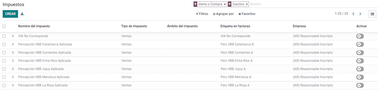
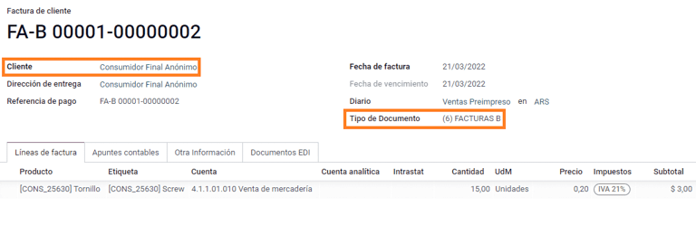
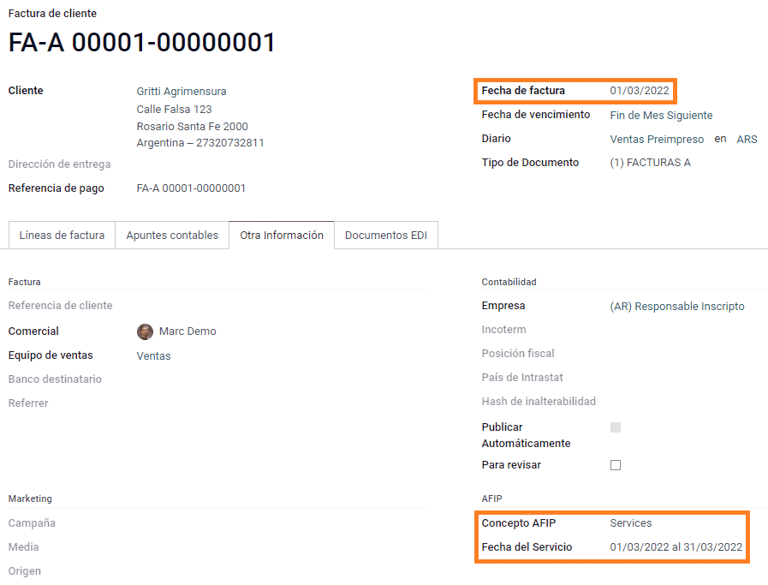
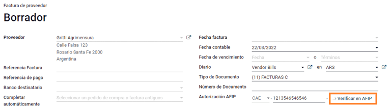

Argentina¶
Webinars¶
Below you can find videos with a general description of the localization, and how to configure it.
構成設定¶
Modules installation¶
Install the following modules to get all the features of the Argentinean localization:
名前（name） |
Technical name |
Description |
|---|---|---|
Argentina - Accounting |
|
Default fiscal localization package, which represents the minimal configuration to operate in Argentina under the AFIP regulations and guidelines. |
Argentinean Accounting Reports |
|
VAT Book report and VAT summary report. |
Argentinean Electronic Invoicing |
|
Includes all technical and functional requirements to generate electronic invoices via web service, based on the AFIP regulations. |
Argentinean eCommerce |
|
(optional) Allows the user to see Identification Type and AFIP Responsibility in the eCommerce checkout form in order to create electronic invoices. |
Configure your company¶
Once the localization modules are installed, the first step is to set up the company's data. In addition to the basic information, a key field to fill in is the AFIP Responsibility Type, which represents the fiscal obligation and structure of the company.

Chart of account¶
In Accounting, there are three different Chart of Accounts packages to choose from. They are based on a company's AFIP responsibility type, and consider the difference between companies that do not require as many accounts as the companies that have more complex fiscal requirements:
Monotributista (227 accounts);
IVA Exento (290 accounts);
Responsable Inscripto (298 Accounts).

Configure master data¶
Electronic Invoice Credentials¶
Environment¶
The AFIP infrastructure is replicated in two separate environments, testing and production.
Testing is provided so that the companies can test their databases until they are ready to move into the Production environment. As these two environments are completely isolated from each other, the digital certificates of one instance are not valid in the other one.
To select a database environment, go to and choose either Prueba (Testing) or Produccion (Production).

AFIP certificates¶
The electronic invoice and other AFIP services work with Web Services (WS) provided by the AFIP.
In order to enable communication with the AFIP, the first step is to request a Digital Certificate if you do not have one already.
Generate Certificate Sign Request (Odoo). When this option is selected, a file with extension
.csr(certificate signing request) is generated to be used in the AFIP portal to request the certificate.
Generate Certificate (AFIP). Access the AFIP portal and follow the instructions described in this document to get a certificate.
Upload Certificate and Private Key (Odoo). Once the certificate is generated, upload it to Odoo using the Pencil icon next to the field Certificado and select the corresponding file.

ちなみに
In case you need to configure the Homologation Certificate, please refer to the AFIP official documentation: Homologation Certificate. Furthermore, Odoo allows the user to test electronic invoicing locally without a Homologation Certificate. The following message will be in the chatter when testing locally:

パートナー¶
Identification type and VAT¶
As part of the Argentinean localization, document types defined by the AFIP are now available in the Partner form. Information is essential for most transactions. There are six Identification Types available by default, as well as 32 inactive types.

注釈
The complete list of Identification Types defined by the AFIP is included in Odoo, but only the common ones are active.
AFIP responsibility type¶
In Argentina, the document type and corresponding transactions associated with customers and vendors is defined by the AFIP Responsibility type. This field should be defined in the Partner form.

Taxes¶
As part of the localization module, the taxes are created automatically with their related financial account and configuration, e.g., 73 taxes for Responsable Inscripto.

Taxes types¶
Argentina has several tax types, the most common ones are:
VAT: this is the regular VAT and can have various percentages;
Perception: advance payment of a tax that is applied on invoices;
Retention: advance payment of a tax that is applied on payments.
Special taxes¶
Some Argentinean taxes are not commonly used for all companies, and those less common options are labeled as inactive in Odoo by default. Before creating a new tax, be sure to check if that tax is not already included as inactive.
Document types¶
In some Latin American countries, like Argentina, some accounting transactions such as invoices and vendor bills are classified by document types defined by the governmental fiscal authorities. In Argentina, the AFIP is the governmental fiscal authority that defines such transactions.
The document type is an essential piece of information that needs to be clearly displayed in printed reports, invoices, and journal entries that list account moves.
Each document type can have a unique sequence per journal where it is assigned. As part of the localization, the document type includes the country in which the document is applicable (this data is created automatically when the localization module is installed).
The information required for the Document Types is included by default so the user does not need to fill anything on this view:

注釈
There are several Document Types types that are inactive by default, but can be activated as needed.
Letters¶
For Argentina, the Document Types include a letter that helps indicate the type of transaction or operation. For example, when an invoice is related to a(n):
B2B transaction, a document type A must be used;
B2C transaction, a document type B must be used;
Exportation Transaction, a document type E must be used.
The documents included in the localization already have the proper letter associated with each Document Type, so there is no further configuration necessary.

Use on invoices¶
The Document Type on each transaction will be determined by:
The journal entry related to the invoice (if the journal uses documents);
The onditions applied based on the type of issuer and receiver (e.g., the type of fiscal regime of the buyer and the type of fiscal regime of the vendor).
Journals¶
In the Argentinean localization, the journal can have a different approach depending on its usage and internal type. To configure journals, go to .
For sales and purchase journals, it's possible to activate the option Use Documents, which enables a list of Document Types that can be related to the invoices and vendor bills. For more detail on invoices, please refer to the section 2.3 document types.
If the sales or purchase journals do not have the Use Documents option activated, they will not be able to generate fiscal invoices, meaning, their use case will be mostly limited to monitoring account moves related to internal control processes.
AFIP information (also known as AFIP Point of Sale)¶
The AFIP POS System is a field only visible for the Sales journals and defines the type of AFIP POS that will be used to manage the transactions for which the journal is created.
The AFIP POS defines the following:
the sequences of document types related to the web service;
the structure and data of the electronic invoice file.

Web services¶
Web services help generate invoices for different purposes. Below are a few options to choose from:
wsfev1: Electronic Invoice: is the most common service, which is used to generate invoices for document types A, B, C, M with no detail per item;
wsbfev1: Electronic Fiscal Bond: is for those who invoice capital goods and wish to access the benefit of the Electronic Tax Bonds granted by the Ministry of Economy. For more details go to: Fiscal Bond;
wsfexv1: Electronic Exportation Invoice: is used to generate invoices for international customers and transactions that involve exportation processes, the document type related is type "E".

Here are some useful fields to know when working with web services:
AFIP POS Number: is the number configured in the AFIP to identify the operations related to this AFIP POS;
AFIP POS Address: is the field related to the commercial address registered for the POS, which is usually the same address as the company. For example, if a company has multiple stores (fiscal locations) then the AFIP will require the company to have one AFIP POS per location. This location will be printed in the invoice report;
Unified Book: when the AFIP POS System is Preimpresa, then the document types (applicable to the journal) with the same letter will share the same sequence. For example:
Invoice: FA-A 0001-00000002;
Credit Note: NC-A 0001-00000003;
Debit Note: ND-A 0001-00000004.
Sequences¶
For the first invoice, Odoo synchronizes with the AFIP automatically and displays the last sequence used.
注釈
When creating Purchase Journals, it's possible to define whether they are related to document types or not. In the case where the option to use documents is selected, there would be no need to manually associate the document type sequences, since the document number is provided by the vendor.
Usage and testing¶
Invoice¶
The information below applies to invoice creation once the partners and journals are created and properly configured.
Document type assignation¶
When the partner is selected, the Document Type field will be filled in automatically based on the AFIP document type:
Invoice for a customer IVA Responsable Inscripto, prefix A is the type of document that shows all the taxes in detail along with the customer's information.

Invoice for an end customer, prefix B is the type of document that does not detail the taxes, since the taxes are included in the total amount.
Exportation Invoice, prefix E is the type of document used when exporting goods that shows the incoterm.

Even though some invoices use the same journal, the prefix and sequence are given by the Document Type field.
The most common Document Type will be defined automatically for the different combinations of AFIP responsibility type but it can be updated manually by the user before confirming the invoice.
Electronic invoice elements¶
When using electronic invoices, if all the information is correct then the invoice is posted in the standard way unless there is an error that needs to be addressed. When error messages pop up, they indicate both the issue that needs attention along with a proposed solution. If an error persists, the invoice remains in draft until the issue is resolved.
Once the invoice is posted, the information related to the AFIP validation and status is displayed in the AFIP tab, including:
AFIP Autorisation: CAE number;
Expiration Date: deadline to deliver the invoice to the customers (normally 10 days after the CAE is generated);
Result: indicates if the invoice has been Aceptado en AFIP and/or Aceptado con Observaciones.

Invoice taxes¶
Based on the AFIP Responsibility type, the VAT tax can apply differently on the PDF report:
A. Tax excluded: in this case the taxed amount needs to be clearly identified in the report. This condition applies when the customer has the following AFIP Responsibility type of Responsable Inscripto;

B. Tax amount included: this means that the taxed amount is included as part of the product price, subtotal, and totals. This condition applies when the customer has the following AFIP Responsibility types:
IVA Sujeto Exento;
Consumidor Final;
Responsable Monotributo;
IVA liberado.

Special use cases¶
Invoices for services¶
For electronic invoices that include Services, the AFIP requires to report the service starting and ending date, this information can be filled in the tab Other Info.

If the dates are not selected manually before the invoice is validated, the values will be filled automatically with the first and last day of the invoice's month.
Exportation invoices¶
Invoices related to Exportation Transactions require that a journal uses the AFIP POS System Expo Voucher - Web Service so that the proper document type(s) can be associated.

When the customer selected in the invoice is configured with an AFIP responsibility type Cliente / Proveedor del Exterior - Ley N° 19.640, Odoo automatically assigns the:
Journal related to the exportation Web Service;
Exportation document type;
Fiscal position: Compras/Ventas al exterior;
Concepto AFIP: Products / Definitive export of goods;
Exempt Taxes.

注釈
The Exportation Documents require Incoterms to be enabled and configured, which can be found in .

Fiscal bond¶
The Electronic Fiscal Bond is used for those who invoice capital goods and wish to access the benefit of the Electronic Tax Bonds granted by the Ministry of Economy.
For these transactions, it is important to consider the following requirements:
Currency (according to the parameter table) and invoice quotation;
Taxes;
Zone;
Detail each item;
Code according to the Common Nomenclator of Mercosur (NCM);
Complete description;
Unit Net Price;
Quantity;
Unit of measurement;
Bonus;
VAT rate.
Electronic credit invoice MiPyme (FCE)¶
For SME invoices, there are several document types that are classified as MiPyME, which are also known as Electronic Credit Invoice (or FCE in Spanish). This classification develops a mechanism that improves the financing conditions for small and medium-sized businesses, and allows them to increase their productivity, through the early collection of credits and receivables issued to their clients and/or vendors.
For these transactions it's important to consider the following requirements:
specific document types (201, 202, 206, etc);
the emitter should be eligible by the AFIP to MiPyME transactions;
the amount should be bigger than 100,000 ARS;
A bank account type CBU must be related to the emisor, otherwise the invoice cannot be validated, having an error message such as the following.

To set up the Transmission Mode, go to settings and select either SDC or ADC.

To change the Transmission Mode for a specific invoice, go to the Other Info tab and change it before confirming.
注釈
Changing the Transmission Mode will not change the mode selected in Settings.

When creating a Credit/Debit note related to a FCE document:
use the Credit and Debit Note buttons, so all the information from the invoice is transferred to the new Credit and Debit Note;
the document letter should be the same as than the originator document (either A or B);
the same currency as the source document must be used. When using a secondary currency there is an exchange difference if the currency rate is different between the emission day and the payment date. It is possible to create a credit/debit note to decrease/increase the amount to pay in ARS.
When creating a Credit Note we can have two scenarios:
the FCE is rejected so the Credit Note should have the field FCE, is Cancellation? as True; or;
the Credit Note, is created to annulate the FCE document, in this case the field FCE, is Cancellation? must be empty (false).

Invoice printed report¶
The PDF Report related to electronic invoices that have been validated by the AFIP includes a barcode at the bottom of the format which represents the CAE number. The expiration date is also displayed as it is a legal requirement.

Troubleshooting and auditing¶
For auditing and troubleshooting purposes, it is possible to obtain detailed information of an invoice number that has been previously sent to the AFIP. To retrieve this information, activate the developer mode, then go to the menu and click on the button Consult Invoice button in AFIP.


It is also possible to retrieve the last number used in AFIP for a specific document type and POS Number as a reference for any possible issues on the sequence synchronization between Odoo and AFIP.

Vendor bills¶
Based on the purchase journal selected for the vendor bill, the Document Type is now a required field. This value is auto-populated based on the AFIP Responsibility type of Issuer and Customer, but the value can be changed if necessary.

The Document Number field needs to be registered manually and the format will be validated automatically. However, in case the format is invalid, a user error will be displayed indicating the correct format that is expected.

The vendor bill number is structured in the same way as the customer invoices, excepted that the document sequence is entered by the user using the following format: Document Prefix - Letter - Document Number.
Validate vendor bill number in AFIP¶
As most companies have internal controls to verify that the vendor bill is related to an AFIP valid document, an automatic validation can be set in , considering the following levels:
Not available: the verification is not done (this is the default value);
Available: the verification is done. In case the number is not valid it, only displays a warning but still allows the vendor bill to be posted;
Required: the verification is done and it does not allow the user to post the vendor bill if the document number is not valid.

Validate vendor bills in Odoo¶
With the vendor validation settings enabled, a new button shows up on the vendor bills inside of Odoo, labeled Verify on AFIP, which is located next to the AFIP Authorization code field.
In case the vendor bill cannot be validated in AFIP, a value of Rejected will be displayed on the dashboard and the details of the invalidation will be added to the chatter.

Special use cases¶
Untaxed concepts¶
There are some transactions that include items that are not a part of the VAT base amount, such as fuel and gasoline invoices.
The vendor bill will be registered using one item for each product that is part of the VAT base amount, and an additional item to register the amount of the exempt concept.

Perception taxes¶
The vendor bill will be registered using one item for each product that is part of the VAT base amount, and the perception tax can be added in any of the product lines. As a result, there will be one tax group for the VAT and another for the perception. The perception default value is always 0.10.
To edit the VAT perception and set the correct amount, you should use the Pencil icon that is the next to the Perception amount. After the VAT perception amount has been set, the invoice can then be validated.

Check management¶
To install the Third Party and Deferred/Electronic Checks Management module, go to
and search for the module by its technical name l10n_latam_check and click
the Activate button.

This module enables the required configuration for journals and payments to:
Create, manage, and control your different types of checks
Optimize the management of own checks and third party checks
Have an easy and effective way to manage expiration dates from your own and third party checks
Once all the configurations are made for the Argentinian electronic invoice flow, it is also needed to complete certain configurations for the own checks and the third party checks flows.
Own checks¶
Configure the bank journal used to create your own checks by going to , selecting the bank journal, and opening the Outgoing Payments tab.
Checks should be available as a Payment Method. If not, click Add a line and type
Checksunder Payment Method to add themEnable the Use electronic and deferred checks setting.
注釈
This last configuration disables the printing ability but enables to:
Enter check numbers manually
Adds a field to allocate the payment date of the check

Management of own checks¶
Own checks can be created directly from the vendor bill. For this process, click on the Register Payment button.
On the payment registration modal, select the bank journal from which the payment is to be made and set the Check Cash-In Date, and the Amount.

注釈
To manage current checks, the Check Cash-In Date field must be left blank or filled in with the current date. To manage deferred checks, the Check Cash-In Date must be set in the future.
To manage your existing own checks, navigate to . This window shows critical information such as the dates when checks need to be paid, the total quantity of checks, and the total amount paid in checks.

It is important to note that the list is pre-filtered by checks that are still not reconciled with a bank statement - that were not yet debited from the bank - which can be verified with the Is Matched with a Bank Statement field. If you want to see all of your own checks, delete the No Bank Matching filter by clicking on the X symbol.

Cancel an own check¶
To cancel an own check created in Odoo, navigate to and select the check to be canceled, then click on the Void Check button. This will break the reconciliation with the vendor bills and the bank statements and leave the check in a canceled state.

Third party checks¶
In order to register payments using third party checks, two specific journals need to be configured. To do so, navigate to and create two new journals:
Third Party ChecksRejected Third Party Checks
注釈
You can manually create more journals if you have multiple points of sale and need journals for those.
To create the Third Party Checks journal, click the New button and configure the following:
Type
Third Party Checksas the Journal NameSelect Cash as Type
In the Journal Entries tab, set Cash Account: to
1.1.1.02.010 Cheques de Terceros, input a Short Code of your choice, and select a Currency

The available payment methods are listed in the payments tabs:
For new incoming third party checks, go to and select New Third Party Checks. This method is used to create new third party checks.
For incoming and outgoing existing third party checks, go to and select Existing Third Party Checks. Repeat the same step for the Outgoing Payments tab. This method is used to receive and/or pay vendor bills using already existing checks, as well as for internal transfers.
ちなみに
You can delete pre-existing payment methods appearing by default when configuring the third party checks journals.
The Rejected Third Party Checks journal also needs to be created and/or configured. This journal is used to manage rejected third party checks and can be utilized to send checks rejected at the moment of collection or when coming from vendors when rejected.
To create the Rejected Third Party Checks journal, click the New button and configure the following:
Type
Rejected Third Party Checksas the Journal NameSelect Cash as Type
In the Journal Entries tab, set Cash Account: to
1.1.1.01.002 Rejected Third Party Checks, input a Short Code of your choice, and select a Currency
Use the same payment methods as the Third Party Checks journal.
New third party checks¶
To register a new third party check for a customer invoice, click the Register Payment button. In the pop-up window, you must select Third Party Checks as journal for the payment registration.
Select New Third Party Checks as Payment Method, and fill in the Check Number, Payment Date, and Check Bank. Optionally, you can manually add the Check Issuer Vat, but this is automatically filled by the customer's VAT number related to the invoice.

Existing third party checks¶
To pay a vendor bill with an existing check, click the Register Payment button. In the pop-up window, you must select Third Party Checks as journal for the payment registration.
Select Existing Third Party Checks as Payment Method, and select a check from the Check field. The field shows all available existing checks to be used as payment for vendor bills.

When an existing third party check is used, you can review the operations related to it. For example, you can see if a third party check made to pay a customer invoice was later used as an existing third party check to pay a vendor bill.
To do so, either go to or depending on the case, and click on a check. In the Check Current Journal field, click on => Check Operations to bring up the check's history and movements.

The menu also displays critical information related to these operations, such as:
The Payment Type, allowing to classify whether it is a payment sent to a vendor or a payment received from a customer
The Journal in which the check is currently registered
The partner associated with the operation (either customer or vendor).
Reports¶
As part of the localization installation, financial reporting for Argentina was added to the Accounting dashboard. Access these reports by navigating to

VAT reports¶
Sales VAT book¶
In this report, all the sales are recorded, which are taken as the basis for the accounting records to determine the VAT (Tax Debit).
The Sales VAT book report can be exported in a .zip file VAT BOOK (ZIP)
button in the top left, which contains .txt files to upload in the AFIP portal.

Purchases VAT book¶
The Purchases VAT book report can be exported in a .zip file VAT BOOK
(ZIP) button in the top left, which contains .txt files to upload in the AFIP portal.

VAT summary¶
Pivot table designed to check the monthly VAT totals. This report is for internal usage, it is not sent to the AFIP.

IIBB - Reports¶
IIBB - Sales by jurisdiction¶
Pivot table where you can validate the gross income in each jurisdiction. Affidavit for the corresponding taxes to pay, therefore it is not sent to the AFIP.

IIBB - Purchases by jurisdiction¶
Pivot table where you can validate the gross purchases in each jurisdiction. Affidavit for the corresponding taxes to pay, therefore it is not sent to the AFIP.